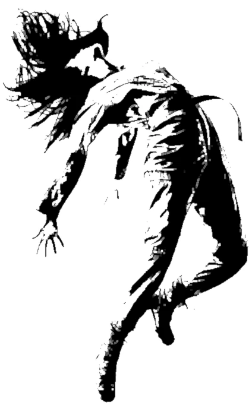
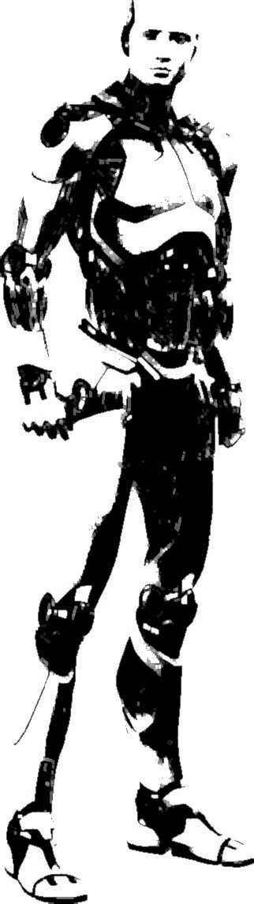
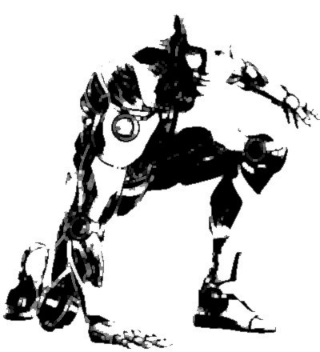
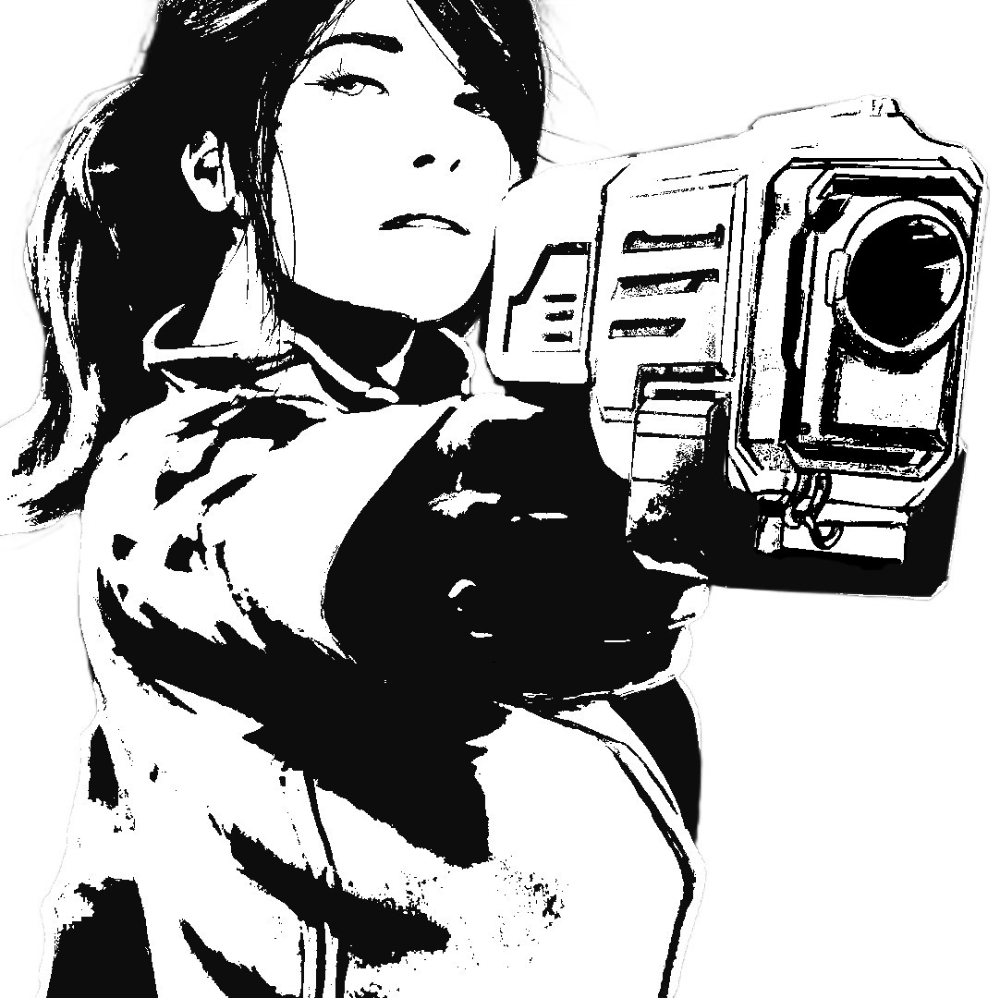
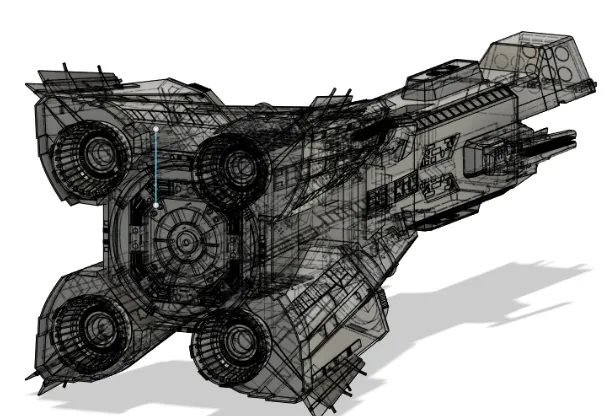
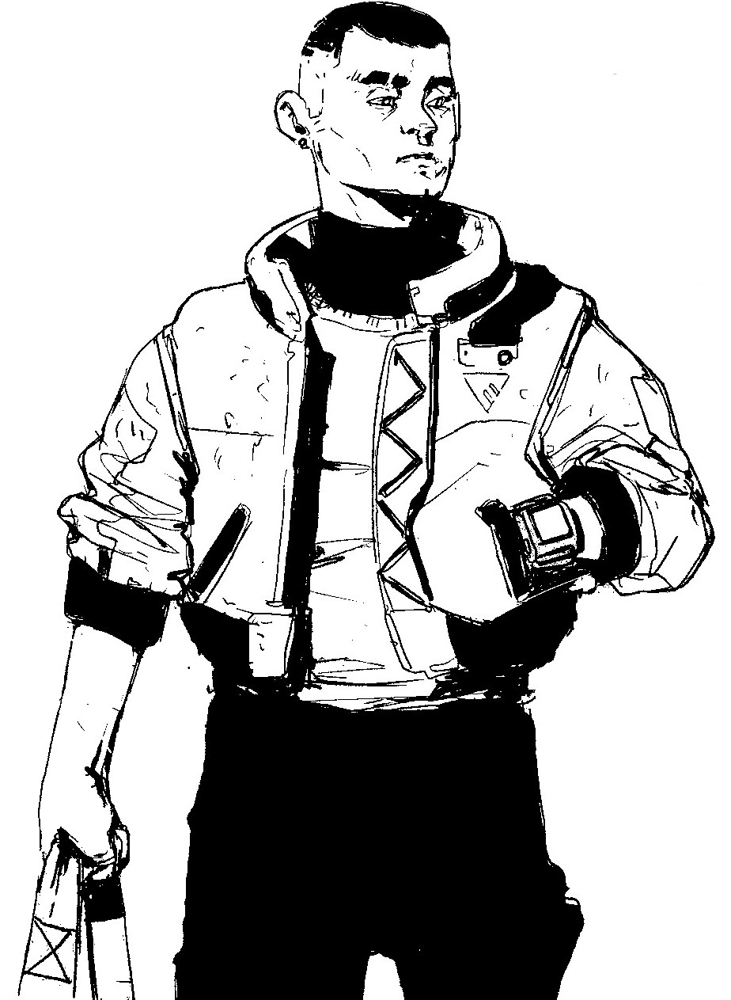
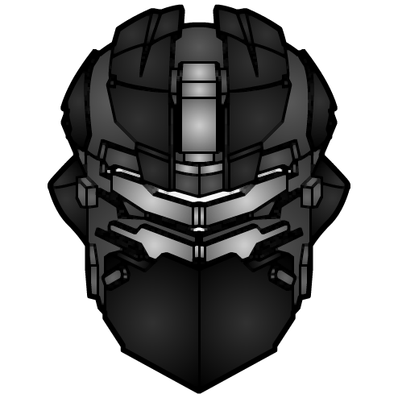

Ceci est une aide de jeu pour Paradis Perdu, un excellent jeu de rôle « Nuit Blanche » d'Anthony "Yno" Combrexelles. Il se compose d'un ensemble de modules optionnels, que vous pourrez adopter pour ajouter des rebondissements supplémentaires au scénario original. Ces modules m'ont également beaucoup aidé en tant que MJ pour préparer ma partie, et compléter quelques points non détaillés dans le jeu de base.
TODO : à compléter + vérifier que liens fonctionnent + intégrer sections du README.md
À rédiger : en substance, l'idée est de réaliser des micro-ellipses lorsque les PJs progressent à travers des étages où il ne se passe rien. + rappel table des Rencontres avec des androïdes page 63
À chaque fois que les PJs veulent se rendre d'un point A à un point B dans la station, indiquez le ou les itinéraires qu'ils peuvent envisager, ils en choisissent un, puis je leur indique la ou les situations qu'ils rencontrent en chemin
github.com/jacksonbenete/email_terminal
Tout le monde peut y accéder si on montre la manip' à effectuer, mais au début seuls Arora et Sullivan connaissent l'existence de cette fonctionnalité cachée. Donne accès :
TODO : préparer une 2e version "dégradée" publiée en ligne durant la partie : plus aucun vaisseau listé à quai, gros soucis remontés par l'audit de communication, niveau d'oxygène de la station réduit, etc.
En complément des informations données dans le scénario, cette section propose quelques éléments supplémentaires pour jouer les PNJs, en détaillant notamment leurs objectifs durant les actes 2 et 3, leur attitude face aux PJs, la manière la plus probable dont ils décèderont, et un conseil sur comment interprêter théâtralement chaque personnage.
Là où le scénario détaille parfaitement les actions de Watters, le culte et ses membrent sont très peu mentionnés.
D'expérience, il est intéressant d'avoir des raisons diégétiques pour que les personnages se face confiance, ou au moins aient un bon prétexte pour ouvrir la conversation : les PJs entre eux, mais aussi les PJs envers les PNJs.
Dans cette idée, voici donc un tableau de Connivences, des liens entre PJs / PNJs que vous pourrez découper, puis les faire piocher à chaque joueur en début de partie (un ou deux chacun, comme vous voulez) :
| Votre voisin de gauche vous semble familier... L'auriez-vous déjà croisé lors d'un précédent job ? | Votre voisin de droite est un parent éloigné, que vous n'aviez pas revu depuis l'enfance. | Le PJ du joueur en face de vous a une tête qui t'inspire confiance. |
|---|---|---|
| On dit que Brett Bettany est sur Terra Nova : tu l'as déjà croisé, c'est un ouvrier borné mais réglo. | On dit qu'Ellen Frost est sur Terra Nova : tu l'as déjà croisée, c'est une syndicaliste intègre. | On dit que Kenneth O'Neil est sur Terra Nova : tu l'as déjà croisé, c'est un marshal strict mais juste. |
| On dit que l'église de l'Ascension est présente sur Terra Nova : leur culte a sale réputation. | Tu as entendu dire que Terra Nova comporterait un laboratoire secret d'expérimentation. | D'après les rumeurs, ça chauffe sur Cepheus, entre la Global Extraction Corporation et les colons. |
| D'après les rumeurs, une nouvelle drogue de synthèse circulerait sur Terra Nova |
La table ci-dessous fournit quelques éléments pour étoffer les descriptions de la station orbitale, et réaliser un peu de foreshadowing des événements à venir.
Durant l'acte 1, quel que soit l'endroit où se situent les PJs dans Terra Nova, demandez leur un jet de Percevoir (+ Observation).
Décrivez alors au(x) PJ(s) avec le plus grand nombre de réussites l'élement ci-dessous correspondant à ce niveau de réussite, en déterminant un élement au hasard dans la liste avec 1D6. Barrez ensuite le résultat obtenu : s'il est tiré à nouveau lors d'un prochain jet, ignorez-le et passez au suivant.
1-2 réussites :
À travers un hublot vous appercevez Cepheus. À cet instant, la planète est éclairée d'un halo surréel, saisissant de beauté... Puis cet instant de grâce se dissipe.
Un peu plus loin, un employé en uniforme vert fouille dans sa poche en se dirigeant vers un CommLink, et trébuche. Heureusement un androïde « Miranda » le rattrape in-extremis, lui évitant de se fracturer le crâne sur un rebord de métal. L'employé repousse le robot avec mépris... et lui crâche même au visage.
Un spot vidéo de Revolve vante l'autonomie révolutionnaire et l'incroyable précision des gestes de leurs androïdes
Un spot vidéo de pub pour Global Extraction Corporation, où le PJ attentif aperçoit un exosquelette faire un bras d'honneur en arrière-plan d'une séquence. Les PJs pourront ensuite apprendre que'il s'agit de Frost.
Dans l'espace, on voit à travers un hublot deux dockers en combinaison intercepter adroitement un petit astéroïde et en découper un morceau au cutter-plasma. Les PJs pourront ensuite apprendre que cette opération avait pour but de récupérer du minerai précieux détecté dans cette météorite.
Plus loin, une paroi rassemble plusieurs graffitis : « L'Intergalactique sera le genre humain », « Mort aux androïdes », « Pour échapper à votre condition, rejoignez l'église de l'Ascension »...
3+ réussites :
Des dockers tabassent un androïde prostré dans un coin. Libre au PJ d'intervenir où non. S'ils le font, les dockers s'en iront rapidement en grommelant.
Un ouvrier fébrile apostrophe le PJ : « Hé ! Tu me regardes depuis tout à l'heure : t'en veux ? 100 crédits les 10 doses. » Libre au PJ d'accepter ou non le deal ou de bavarder avec cet ouvrier, un grand maigrichon aux cheveux blancs noués en queue de cheval nommé Curtis Oakes. Celui-ci s'éloigne bien vite dès qu'il comprend qu'il n'a pas d'acheteur potentiel en face de lui.
Dans un coin de la pièce / coursive, vous apercevez une flaque de vomi, avec des restes d'aliments mal digérés, notamment des haricots blancs, de la viande, ainsi que de petites gélules.
Une employée de Revolve (l'ingénieure en chef Cotton) apostrophe un officier de la sécurité de la station (la marshal adjointe Jones). Les deux femmes semblent énervées mais n'élèvent pas la voix pour autant. Tout ce que le PJ peut distinguer de leur échange c'est qu'il est question de ressources manquantes.
Certaines personnes autour portent des chaussures magnétiques. Elles doivent leur permettarent de se déplacer à l'extérieur de la station, ou lorsque l'anneau générateur de gravité de la station est arrêté.
Un androïde Arnie de sécurité, en uniforme bleu, transporte une caisse à bout de bras, sur laquelle le PJ distingue la mention « explosif ». Il disparaît dans l'ascenseur / dans l'angle d'un couloir.
Durant l'acte 2, je vous recommande d'infliger assez vites de sérieux dégâts aux PJs :
...
Un PNJ croisé par les joueurs VS plusieurs civils en danger, avec par exemple PJs dans une salle de contrôle en capacité de contrôler un sas
S'inspirer des travaux de l'acte 1 pour créer des situations lors des actes suivants
Les androïdes ne se pressent pas et donnent une mort la moins douloureuse possible




 Merci aux illustrateurs qui ont placé leur travail sous licence Creative Commons :
Merci enfin aux développeurs des logiciels libres employés : le navigateur Firefox, le logiciel de dessin Gimp, l'éditeur de texte Notepad++, le lecteur de PDF Sumatra PDF, le language de programmation Python, les bibliothèques de code mistletoe & weasyprint.
Cette aide de jeu de Lucas Cimon est placée sous license Creative Commons Attribution-NonCommercial 4.0 International.
Les fichiers sources ayant permis de générer ce PDF sont disponibles sur GitHub. Version : 1.0
Cette aide de jeu est diffusée à prix libre. Si vous souhaitez soutenir mes projets, vous pouvez me faire un don sur lucas-c.itch.io.
Je serais ravi d'avoir vos retours sur cette aide de jeu si vous l'employez. Racontez-moi comment s'est passée votre partie via un commentaire lucas-c.itch.io ou sur mon blog.